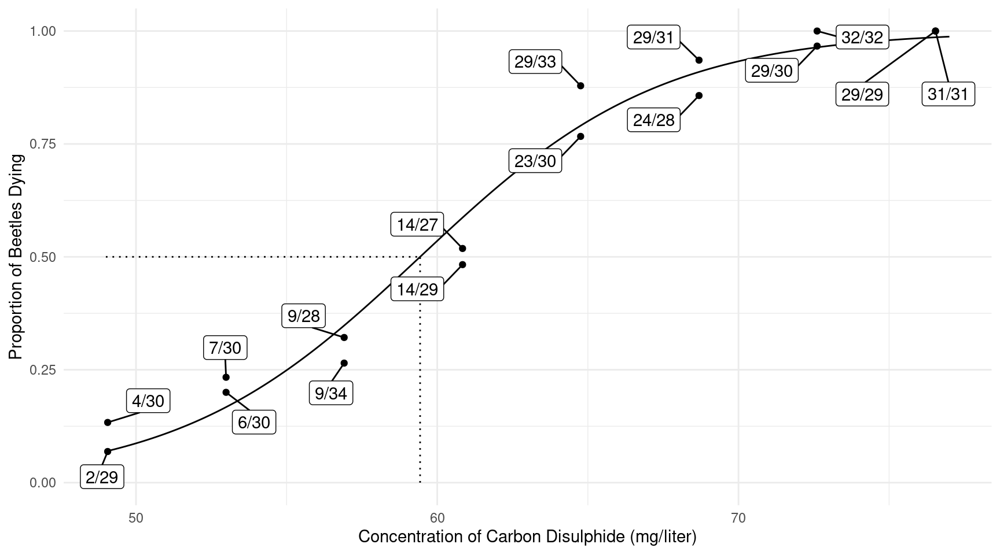
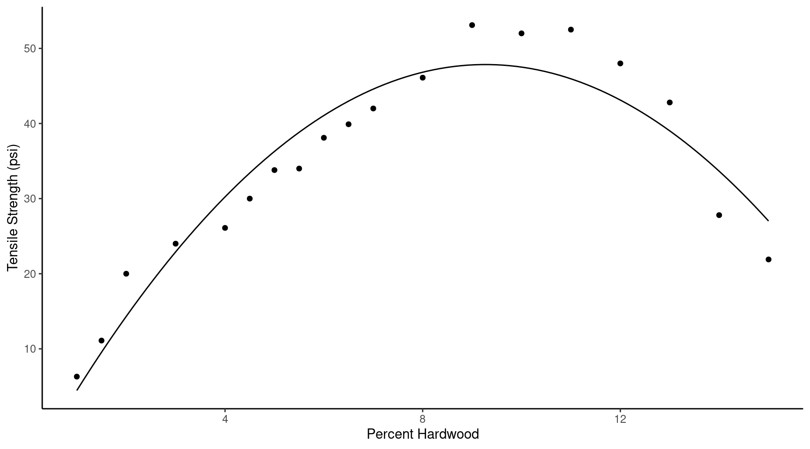
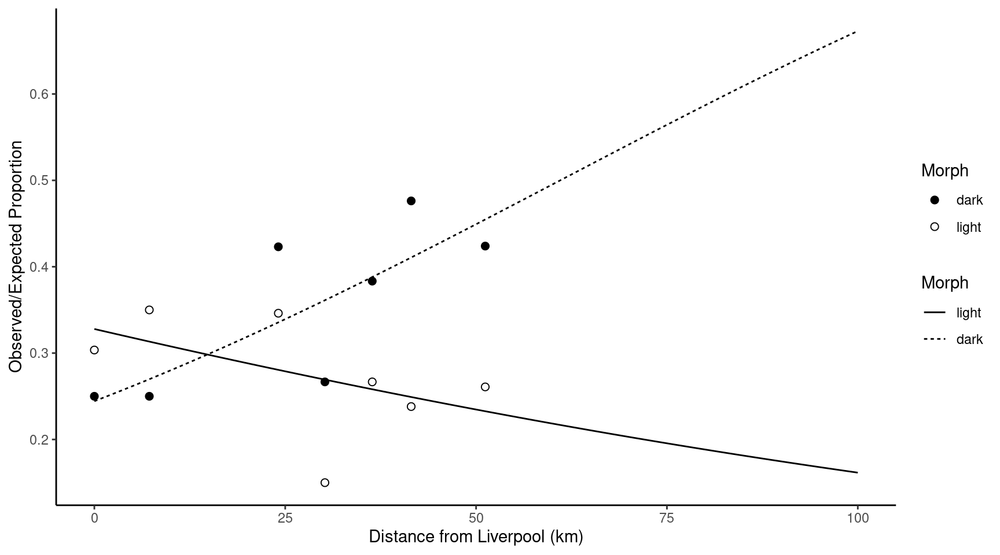
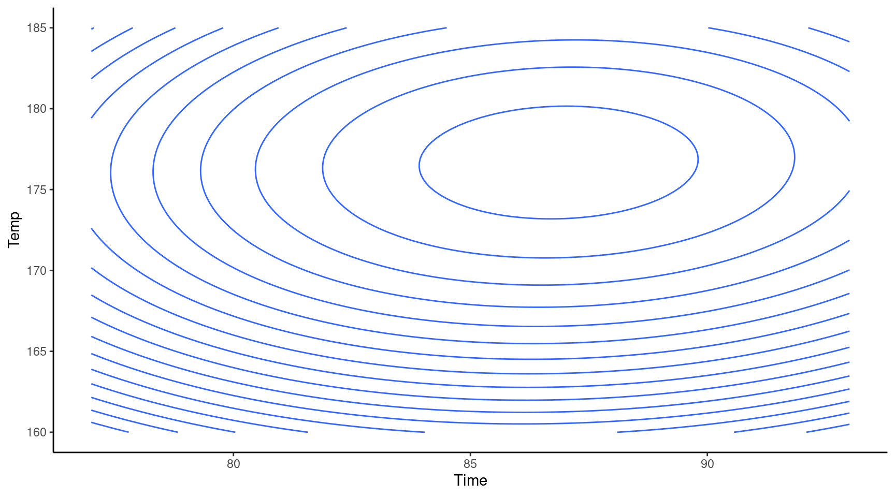

You can also download a PDF copy of this lecture.
Consider a regression model with parameters \(\beta_0, \beta_1, \dots, \beta_k\). A linear combination is a linear function of the form \[ \ell = a_0\beta_0 + a_1\beta_1 + a_2\beta_2 + \cdots + a_k\beta_k + b, \] where \(a_0, a_1, \dots, a_k\) and \(b\) are user-specified coefficients (frequently \(b=0\), and to simplify what follows assume \(b=0\)). Often (but not always) quantities of interest can be expressed as linear combinations.
Example: Consider the linear model \[
E(G_i) = \beta_0 + \beta_1 d_i + \beta_2 t_i + \beta_3d_it_i.
\] for the whiteside data, where \(G_i\) is gas consumption, \(t_i\) is temperature, and \(d_i\) is an indicator variable for
after insulation such that \[
d_i =
\begin{cases}
1, & \text{if the $i$-th observation is after insulation}, \\
0, & \text{otherwise}.
\end{cases}
\] Then we can write the model case-wise as \[
E(G_i) =
\begin{cases}
\beta_0 + \beta_2 t_i, & \text{if $i$-th observation is
before insulation}, \\
\beta_0 + \beta_1 + (\beta_2 + \beta_3) t_i, & \text{if
$i$-th observation is after insulation}.
\end{cases}
\] Several quantities that might be of interest can be written as
linear combinations. The lincon and contrast
functions facilitate inferences regarding linear combinations. First we
specify the model.
m <- lm(Gas ~ Insul + Temp + Insul:Temp, data = MASS::whiteside)
summary(m)$coefficients Estimate Std. Error t value Pr(>|t|)
(Intercept) 6.8538 0.13596 50.409 7.997e-46
InsulAfter -2.1300 0.18009 -11.827 2.316e-16
Temp -0.3932 0.02249 -17.487 1.976e-23
InsulAfter:Temp 0.1153 0.03211 3.591 7.307e-04Now consider the following linear combinations.
1.\(\!\) Rate of change before insulation: \[\ell = 0\beta_0 + 0\beta_1 + 1\beta_2 + 0\beta_3 = \beta_2.\]
library(trtools)
lincon(m, a = c(0,0,1,0)) estimate se lower upper tvalue df pvalue
(0,0,1,0),0 -0.3932 0.02249 -0.4384 -0.3481 -17.49 52 1.976e-23contrast(m,
a = list(Insul = "Before", Temp = 1),
b = list(Insul = "Before", Temp = 0)) estimate se lower upper tvalue df pvalue
-0.3932 0.02249 -0.4384 -0.3481 -17.49 52 1.976e-232.\(\!\) Rate of change after insulation: \[\ell = 0\beta_0 + 0\beta_1 + 1\beta_2 + 1\beta_3 = \beta_2 + \beta_3.\]
lincon(m, a = c(0,0,1,1)) estimate se lower upper tvalue df pvalue
(0,0,1,1),0 -0.2779 0.02292 -0.3239 -0.2319 -12.12 52 8.936e-17contrast(m,
a = list(Insul = "After", Temp = 1),
b = list(Insul = "After", Temp = 0)) estimate se lower upper tvalue df pvalue
-0.2779 0.02292 -0.3239 -0.2319 -12.12 52 8.936e-173.\(\!\) Expected gas consumption before insulation at 5C: \[\ell = 1\beta_0 + 0\beta_1 + 5\beta_2 + 0\beta_3 = \beta_0 + 5\beta_2.\]
lincon(m, a = c(1,0,0,5)) estimate se lower upper tvalue df pvalue
(1,0,0,5),0 7.43 0.2671 6.894 7.966 27.82 52 6.734e-33contrast(m, a = list(Insul = "Before", Temp = 5)) estimate se lower upper tvalue df pvalue
4.888 0.06383 4.76 5.016 76.57 52 3.885e-55To estimate \(\ell\) we simply replace \(\beta_0, \beta_1, \dots, \beta_k\) with estimates to obtain \[ \hat\ell = a_0\hat\beta_0 + a_1\hat\beta_1 + \cdots + a_k\hat\beta_k. \] To compute the variance of \(\hat\ell\) we use the result that \[ \text{Var}(\hat\ell) = \sum_{\vphantom{j'=0} j=0}^k\sum_{\mathstrut j'=0}^k a_ja_{j'}\text{Cov}(\hat\beta_j,\hat\beta_{j'}), \] where \(\text{Cov}(\hat\beta_j,\hat\beta_{j'})\) is the covariance between the estimators \(\hat\beta_j\) and \(\hat\beta_{j'}\), and note that the covariance of an estimator with itself is its variance — i.e., \(\text{Cov}(\hat\beta_j,\hat\beta_{j}) = \text{Var}(\hat\beta_j)\).
Example: If we had the model \(E(Y_i) = \beta_0 + \beta_1 x_i\) then the covariances can be arranged in a matrix as \[ \begin{bmatrix} \text{Cov}(\hat\beta_0,\hat\beta_0) & \text{Cov}(\hat\beta_0,\hat\beta_1) \\ \text{Cov}(\hat\beta_1,\hat\beta_0) & \text{Cov}(\hat\beta_1,\hat\beta_1) \end{bmatrix} = \begin{bmatrix} \text{Var}(\hat\beta_0) & \text{Cov}(\hat\beta_0,\hat\beta_1) \\ \text{Cov}(\hat\beta_0,\hat\beta_1) & \text{Var}(\hat\beta_1) \end{bmatrix}, \] noting that the covariance of a variable with itself is its variance, and covariances are symmetric in the sense that \(\text{Cov}(\hat\beta_0,\hat\beta_1) = \text{Cov}(\hat\beta_0,\hat\beta_1)\). If we wanted to compute the variance of the linear combination \(\ell = 1\beta_0 + 5\beta_1\) so that \(a_0 = 1\) and \(a_1 = 5\), then the variance of \(\hat\ell\) would be \[ \text{Var}(\hat\ell) = 1 \times 1 \times \text{Var}(\hat\beta_0) + 1 \times 5 \times \text{Cov}(\hat\beta_0,\hat\beta_1) + 5 \times 1 \times \text{Cov}(\hat\beta_0,\hat\beta_1) + 5 \times 5 \times \text{Var}(\hat\beta_1), \] which simplifies to \[ \text{Var}(\hat\ell) = \text{Var}(\hat\beta_0) + 10\text{Cov}(\hat\beta_0,\hat\beta_1) + 25\text{Var}(\hat\beta_1). \]
Typically we only have estimates of the variances and covariances so
we can only compute an estimate of \(\text{Var}(\hat\ell)\) denoted as \(\widehat{\text{Var}}(\hat\ell)\). The
square root of this estimate is the standard error you usually
see reported by R functions like contrast and
lincon. The confidence interval for \(\ell\) is then \[
\hat\ell \pm t\sqrt{\widehat{\text{Var}}(\hat\ell)} \ \ \text{or} \ \
\hat\ell \pm z\sqrt{\widehat{\text{Var}}(\hat\ell)},
\]
and the test statistic is \[
\frac{\hat\ell - \ell}{\sqrt{\widehat{\text{Var}}(\hat\ell)}},
\] where typically \(\ell = 0\)
because the null hypothesis is that \(H_0\!:
\ell = 0\). This is the test statistic you typically see reported
by R functions like contrast and lincon.
The delta method is used to approximate the sampling distribution of a nonlinear function of model parameters.
Example: Consider a logistic regression model for
the bliss data.

The model can be written as \[
\log\left[\frac{E(Y)}{1-E(Y)}\right] = \beta_0 + \beta_1 x,
\] where \(x\) is concentration.
The \(\text{LD}_{50}\) is the value of
\(x\) (e.g., dose, concentration) such
that the expected proportion of deaths is 0.5 so that \[
\log\left[\frac{0.5}{1-0.5}\right] = \beta_0 + \beta_1\text{LD}_{50}.
\] Solving for \(\text{LD}_{50}\) gives \[
\text{LD}_{50} = \frac{-\beta_0}{\beta_1}.
\] An estimator of \(\text{LD}_{50}\) is \[
\widehat{\text{LD}}_{50} = \frac{-\hat\beta_0}{\hat\beta_1},
\] but this is a nonlinear function of \(\hat\beta_0\) and \(\hat\beta_1\).
The delta method uses the following results:
Nonlinear functions of the model parameters can be “locally approximated” by a linear function (see below).
As \(n\) increases sampling distributions become increasingly “concentrated” in a location near the actual quantity being estimated.
If the sampling distribution of \(\hat\beta_0,\hat\beta_1,\dots,\hat\beta_k\) is approximately (multivariate) normal, then the sampling distribution of an (approximately) linear function of these estimators is also approximately normal.
Let \(f(\beta_0,\beta_1,\dots,\beta_k)\) be a function of \(\beta_0, \beta_1, \dots, \beta_k\) such as \(f(\beta_0,\beta_1) = -\beta_0/\beta_1\). Using some calculus it can be shown that in many practical cases we can approximate \(f(\beta_0,\beta_1,\dots,\beta_k)\) at any specific point (i.e., “locally”) by \[ \ell \approx c + d_0\beta_0 + d_1\beta_1 + \cdots + d_k\beta_k, \] where \(c\) is a constant. The coefficients \(d_0, d_1, \dots, d_1\) are the partial derivatives of \(f(\beta_0,\beta_1,\dots,\beta_k)\) at given values of \(\beta_0, \beta_1, \dots, \beta_k\) so that \[ d_j = \frac{\partial f(\beta_0,\beta_1,\dots,\beta_k)}{\partial \beta_j}. \] We approximate \(f(\beta_0,\beta_1,\dots,\beta_k)\) at \(f(\hat\beta_0,\hat\beta_1,\dots,\hat\beta_k)\). Then we can compute \[ \text{Var}[f(\hat\beta_0,\hat\beta_1,\dots,\hat\beta_k)] \approx \sum_{\vphantom{j'=0} j=0}^k\sum_{j'=0}^k d_jd_{j'}\text{Cov}(\hat\beta_j,\hat\beta_{j'}), \] where the partial derivatives are evaluated at the parameter estimates. The main mathematical challenge perhaps is evaluating the partial derivatives. This may be done analytically or numerically.
Example: Consider again the problem of making
inferences regarding \(\text{LD}_{50} =
-\beta_0/\beta_1\). The dmethod function from the
trtools package implements the delta method, using
numerically approximated derivatives for greater
flexibility.
library(trtools)
m <- glm(cbind(dead, exposed - dead) ~ concentration, family = binomial, data = bliss)
cbind(summary(m)$coefficients, confint(m)) Estimate Std. Error z value Pr(>|z|) 2.5 % 97.5 %
(Intercept) -14.8084 1.28976 -11.48 1.633e-30 -17.4785 -12.4089
concentration 0.2492 0.02138 11.65 2.250e-31 0.2095 0.2935dmethod(m, pfunc = "-b0/b1", pname = c("b0","b1")) estimate se lower upper tvalue df pvalue
59.43 0.5287 58.39 60.47 112.4 Inf 0Example: The “instantaneous” marginal effect of dose
for the logistic model for the bliss data is the slope of a
tangent line at a given value of dose (\(x\)). A little calculus shows that this is
\[
\frac{\partial}{\partial x}\frac{e^{\beta_0+\beta_1x}}{1 +
e^{\beta_0+\beta_1x}} =
\frac{\beta_1e^{\beta_0 + \beta_1 x}}{(1 + e^{\beta_0 + \beta_1
x})^2}.
\] Here is the estimate of the instantaneous marginal effect at
the (estimated) \(\text{LD}_{50}\) from
above.
dmethod(m, pfunc = "b1*exp(b0+b1*59.43)/(1+exp(b0+b1*59.43))^2", pname = c("b0","b1")) estimate se lower upper tvalue df pvalue
0.06229 0.005346 0.05181 0.07277 11.65 Inf 2.245e-31The margeff function does the same thing but computes
the derivative above numerically as well.
margeff(m, delta = 0.001,
a = list(concentration = 59.43 + 0.001),
b = list(concentration = 59.43)) estimate se lower upper tvalue df pvalue
0.06229 0.005346 0.05181 0.07277 11.65 Inf 2.247e-31Since \(\text{LD}_{50} = -\beta_0/\beta_1\) we can substitute this for \(x\) in the expression for the instantaneous marginal effect. Simplifying gives \[ \frac{\beta_1e^{\beta_0 + \beta_1 (-\beta_0/\beta_1)}}{(1 + e^{\beta_0 + \beta_1 (-\beta_0/\beta_1)})^2} = \beta_1/4. \] So then we have
dmethod(m, pfunc = "b1/4", pname = c("b0","b1")) estimate se lower upper tvalue df pvalue
0.06229 0.005346 0.05181 0.07277 11.65 Inf 2.25e-31but since \(\beta_1/4 = a_0\beta_0 +
a_1\beta_1\) where \(a_0 = 0\)
and \(a_1 = 1/4\) we can do this using
lincon as well.
lincon(m, a = c(0,0.25)) estimate se lower upper tvalue df pvalue
(0,1/4),0 0.06229 0.005346 0.05181 0.07277 11.65 Inf 2.25e-31It is useful to note that when the function is a linear combination,
dmethod will produce the same results as
lincon. But it provides a slightly different interface
which can be useful since it does not require us to figure out the
coefficients \(a_0, a_1, \dots,
a_k\).
Example: Now consider the discrete marginal effect of increasing dose from 50 to 60 mg/liter. This is \[ \frac{e^{\beta_0+\beta_160}}{1 + e^{\beta_0+\beta_160}} - \frac{e^{\beta_0+\beta_150}}{1 + e^{\beta_0+\beta_150}}. \] This is a nonlinear function of \(\beta_0\) and \(\beta_1\). We can apply the delta method as follows.
dmethod(m, pfunc = "plogis(b0 + b1*60) - plogis(b0 + b1*50)", pname = c("b0","b1")) estimate se lower upper tvalue df pvalue
0.4483 0.02796 0.3935 0.5031 16.03 Inf 7.657e-58Note that the R function plogis is \(e^{x}/(1+e^{x})\) so that saves us a little
typing. The margeff function does the same thing but is
maybe easier to use here.
margeff(m, a = list(concentration = 60), b = list(concentration = 50)) estimate se lower upper tvalue df pvalue
0.4483 0.02796 0.3935 0.5031 16.03 Inf 7.657e-58Example: Consider a polynomial regression model for the expected tensile strength as a function of percent hardwood such that \[ E(S_i) = \beta_0 + \beta_1 p_i + \beta_2 p_i^2, \] where \(S_i\) is tensile strength and \(p_i\) is percent hardwood. Here is what the estimated model looks like.
library(hcc)
data(tensile)
m <- lm(Y ~ x + I(x^2), data = tensile)
summary(m)$coefficients Estimate Std. Error t value Pr(>|t|)
(Intercept) -6.6742 3.39971 -1.963 6.725e-02
x 11.7640 1.00278 11.731 2.854e-09
I(x^2) -0.6345 0.06179 -10.270 1.894e-08d <- data.frame(x = seq(1, 15, length = 100))
d$yhat <- predict(m, newdata = d)
p <- ggplot(tensile, aes(x = x, y = Y)) +
geom_point() + theme_classic() +
geom_line(aes(y = yhat), data = d) +
labs(x = "Percent Hardwood", y = "Tensile Strength (psi)")
plot(p) Now consider the problem of estimating (a) the value of percent hardwood at which expected tensile strength is maximized, and (b) the maximum expected tensile strength. The percent hardwood that maximizes expected tensile strength (\(p_m\)) can be derived as \[ \frac{d (\beta_0 + \beta_1 p + \beta_2 p^2)}{d p} = \beta_1 + 2\beta_2p = 0 \Rightarrow p_m = \frac{-\beta_1}{2\beta_2}. \] Now if we replace \(p\) with \(p_m\) in \(E(S) = \beta_0 + \beta_1 p + \beta_2 p^2\) we find the maximum expected tensile strength (\(s_m\)) to be \[ s_m = \beta_0 + \beta_1 \frac{-\beta_1}{2\beta_2} + \beta_2 \left(\frac{-\beta_1}{2\beta_2}\right)^2 = \frac{4\beta_0\beta_2 - \beta_1^2}{4\beta_2}. \] Both \(p_m\) and \(s_m\) are nonlinear functions of \(\beta_0\), \(\beta_1\) and \(\beta_2\).
dmethod(m, pfunc = "-b1/(2*b2)", pname = c("b0","b1","b2")) estimate se lower upper tvalue df pvalue
9.27 0.2344 8.81 9.729 39.55 Inf 0dmethod(m, pfunc = "(4*b0*b2-b1^2)/(4*b2)", pname = c("b0","b1","b2")) estimate se lower upper tvalue df pvalue
47.85 1.495 44.92 50.78 32.01 Inf 7.656e-225Whenever possible try to check these kinds of estimates against a plot of the data and/or model to catch errors.
Example: Consider a study on moth coloration and predation.
library(Sleuth3)
m <- glm(cbind(Removed, Placed - Removed) ~ Distance + Morph +
Distance:Morph, data = case2102, family = binomial)
d <- expand.grid(Distance = seq(0, 100, length = 100), Morph = c("light","dark"))
d$yhat <- predict(m, d, type = "response")
p <- ggplot(case2102, aes(x = Distance, y = Removed/Placed)) +
geom_point(aes(fill = Morph), size = 2, shape = 21) +
geom_line(aes(y = yhat, linetype = Morph), data = d) +
scale_fill_manual(values = c("black","white")) + theme_classic() +
labs(y = "Observed/Expected Proportion", x = "Distance from Liverpool (km)")
plot(p) Suppose we want to estimate the point at which the two curves cross. First consider the model parameterization.
summary(m)$coefficients Estimate Std. Error z value Pr(>|z|)
(Intercept) -1.12899 0.197906 -5.705 1.166e-08
Distance 0.01850 0.005645 3.277 1.048e-03
Morphlight 0.41126 0.274490 1.498 1.341e-01
Distance:Morphlight -0.02779 0.008085 -3.437 5.884e-04This model can be written as \[ E(Y_i) = \frac{e^{\eta_i}}{1 + e^{\eta_i}}, \] where \(Y_i\) is the \(i\)-th observation of the proportion of removed moths, and the linear predictor \(\eta_i\) is parameterized as \[ \eta_i = \begin{cases} \beta_0 + \beta_1 d_i, & \text{if the morph of the $i$-th observation is dark}, \\ \beta_0 + \beta_2 + (\beta_1 + \beta_3) d_i, & \text{if the morph of the $i$-th observation is light}, \end{cases} \] where \(d_i\) is the distance from Liverpool for the \(i\)-th observation. Let \(d_c\) be the distance at which the expected proportions are equal for both light and dark moths, then \(d_c\) must satisfy the equation \[ \beta_0 + \beta_1 d_c = \beta_0 + \beta_2 + (\beta_1 + \beta_3)d_c. \] Solving this equation for \(d_c\) gives \(d_c = -\beta_2/\beta_3\) (assuming that \(\beta_3 \neq 0\)). Note that \(d_c\) is a nonlinear function of \(\beta_2\) and \(\beta_3\). Inferences concerning \(d_c\) can be made using the delta method.
dmethod(m, pfunc = "-b2/b3", pname = c("b0","b1","b2","b3")) estimate se lower upper tvalue df pvalue
14.8 6.563 1.937 27.66 2.255 Inf 0.02413Example: Suppose we want to estimate the values of two explanatory variables that maximize (or minimize) and expected response.
m <- lm(Yield ~ Time + Temp + I(Time^2) + I(Temp^2) +
I(Time*Temp), data = rsm::ChemReact)
d <- expand.grid(Time = seq(77, 93, length = 100),
Temp = seq(160, 185, length = 100))
d$yhat <- predict(m, newdata = d)
p <- ggplot(d, aes(x = Time, y = Temp, z = yhat))
p <- p + geom_contour(bins = 20) + theme_classic()
plot(p) The model is \[ E(Y_i) = \beta_0 + \beta_1 \text{time}_i + \beta_2 \text{temp}_i + \beta_3 \text{time}_i^2 + \beta_4 \text{temp}_i^2 + \beta_5 \text{time}_i\text{temp}_i, \] where \(Y_i\) is yield. Let \(a_m\) and \(b_m\) be the values of time and temperature, respectively, that maximize \(E(Y)\). These satisfy \[\begin{align*} \frac{\partial (\beta_0 + \beta_1 a_m + \beta_2 b_m + \beta_3 a_m^2 + \beta_4 b_m^2 + \beta_5 a_m b_m)}{\partial a_m} & = 0, \\ \frac{\partial (\beta_0 + \beta_1 a_m + \beta_2 b_m + \beta_3 a_m^2 + \beta_4 b_m^2 + \beta_5 a_m b_m)}{\partial b_m} & = 0. \end{align*}\] Solving this system of equations for \(a_m\) and \(b_m\) we get \[ a_m = \frac{2\beta_1\beta_4 - \beta_2\beta_5}{\beta_5^2-4\beta_3\beta_4} \ \ \ \text{and} \ \ \ b_m = \frac{2\beta_2\beta_3 - \beta_1\beta_5}{\beta_5^2-4\beta_3\beta_4}. \] These can be estimated as follows.
dmethod(m, pfunc = "(2*b1*b4 - b2*b5)/(b5^2 - 4*b3*b4)",
pname = c("b0","b1","b2","b3","b4","b5")) estimate se lower upper tvalue df pvalue
86.86 2.738 81.5 92.23 31.72 Inf 7.422e-221dmethod(m, pfunc = "(2*b2*b3 - b1*b5)/(b5^2 - 4*b3*b4)",
pname = c("b0","b1","b2","b3","b4","b5")) estimate se lower upper tvalue df pvalue
176.7 3.759 169.3 184 47 Inf 0